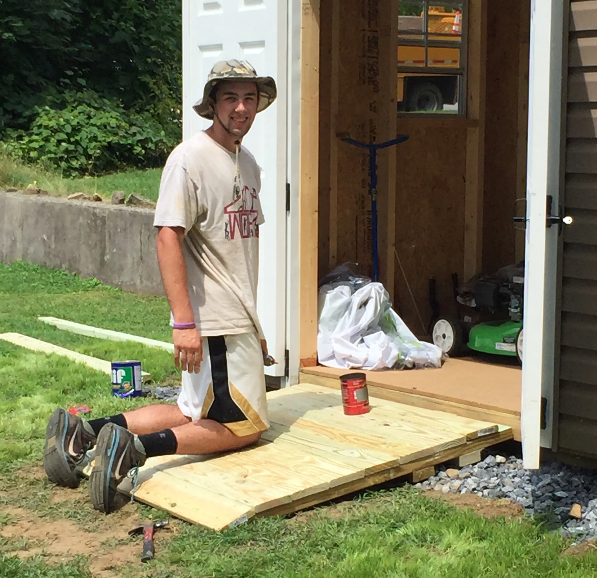
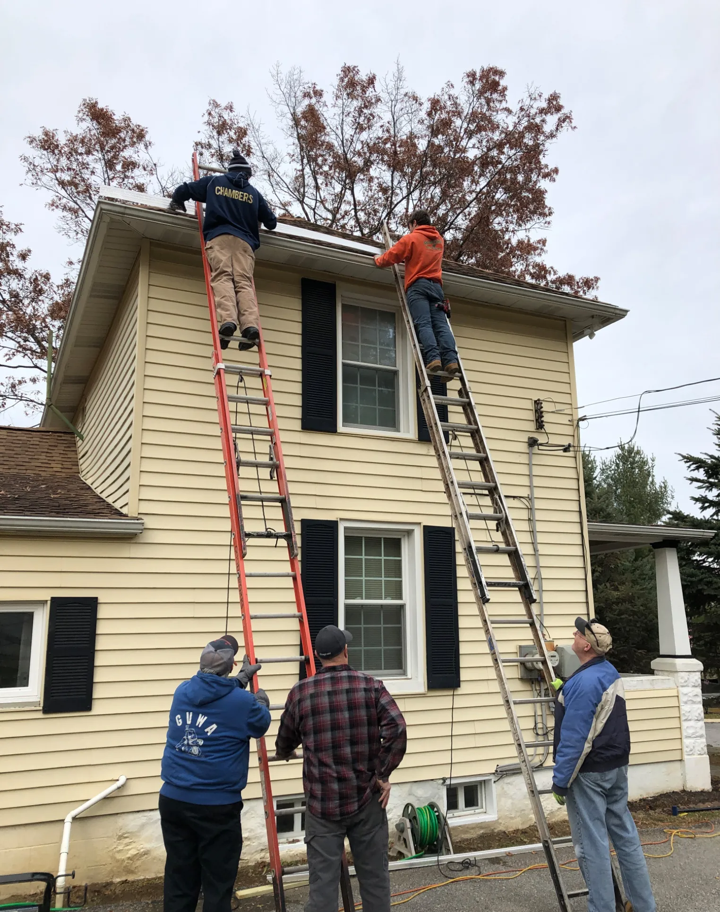

Good Works
What I Did


What I Learned
Volunteering with Goodworks is one of the things that sparked my interest in engineering. It was one of the first settings where I learned how things work, what goes wrong with them, and how to fix them. I learned so many practical skills working with Goodworks. To name a few, I gained experience laying flooring, repairing HVAC systems, installing windows and flashing, repairing roofs, completing bathroom installations, working on plumbing, and doing ceiling installation.